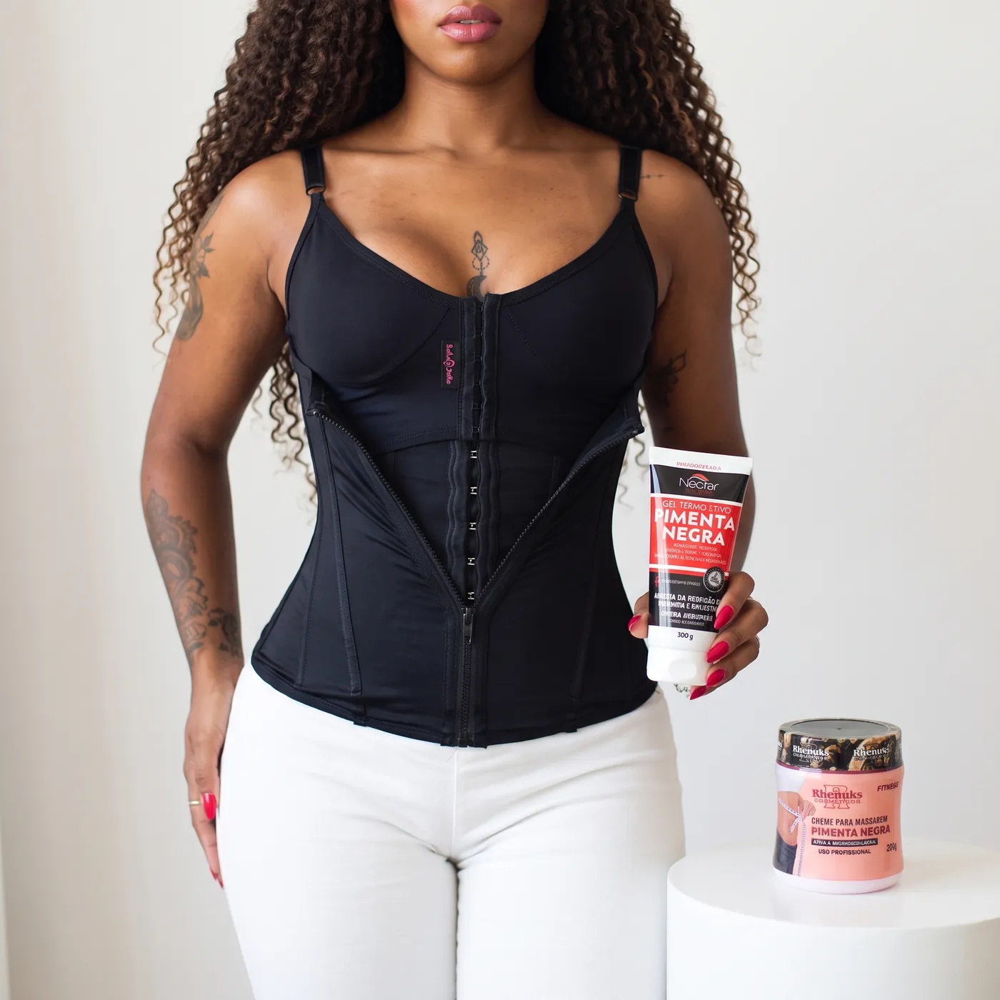
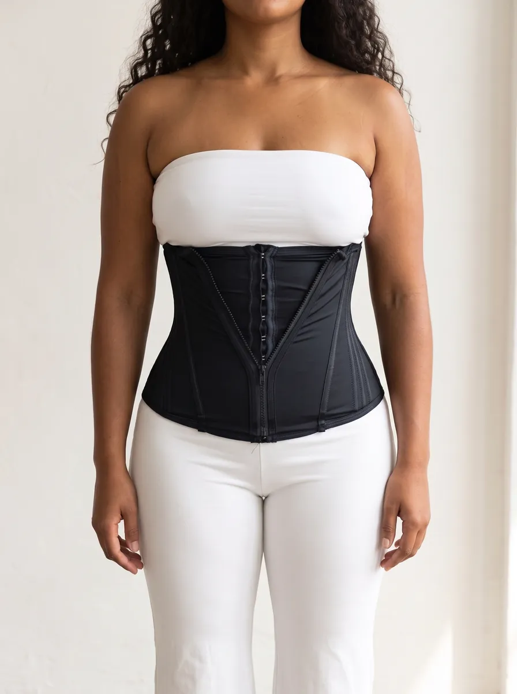
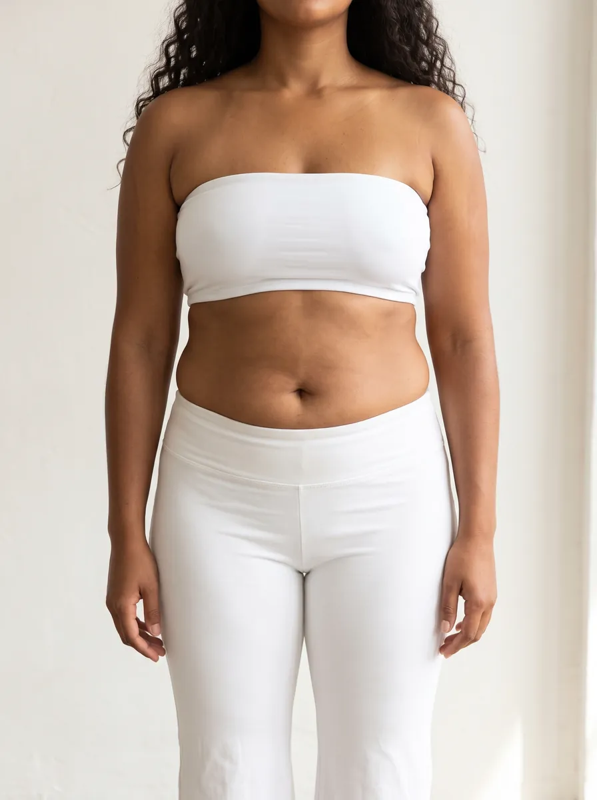
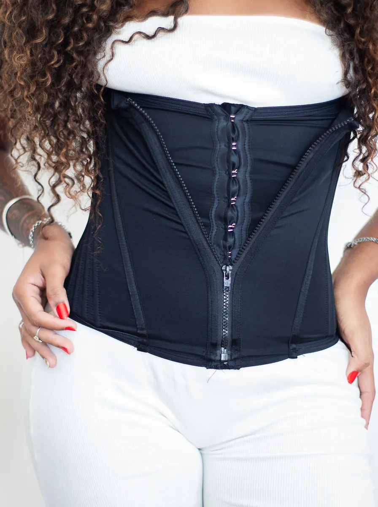
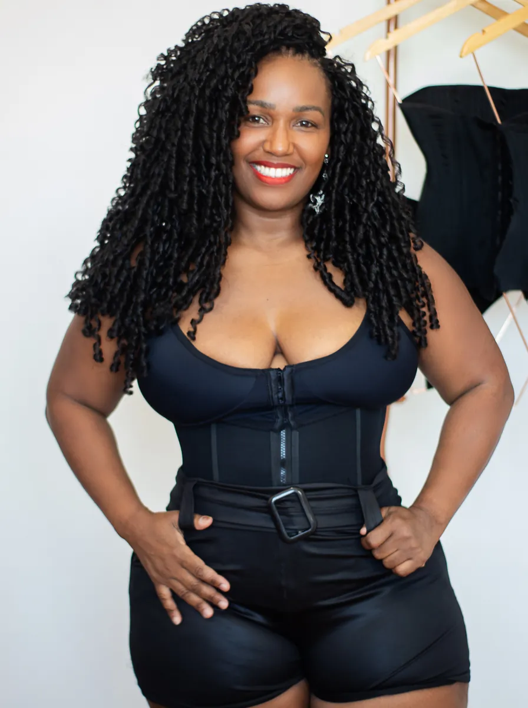
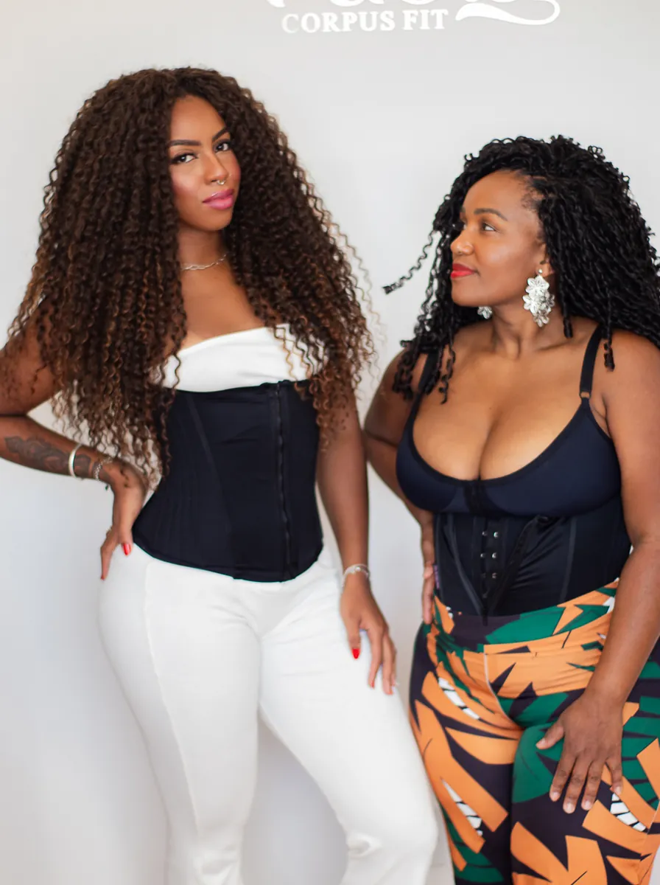
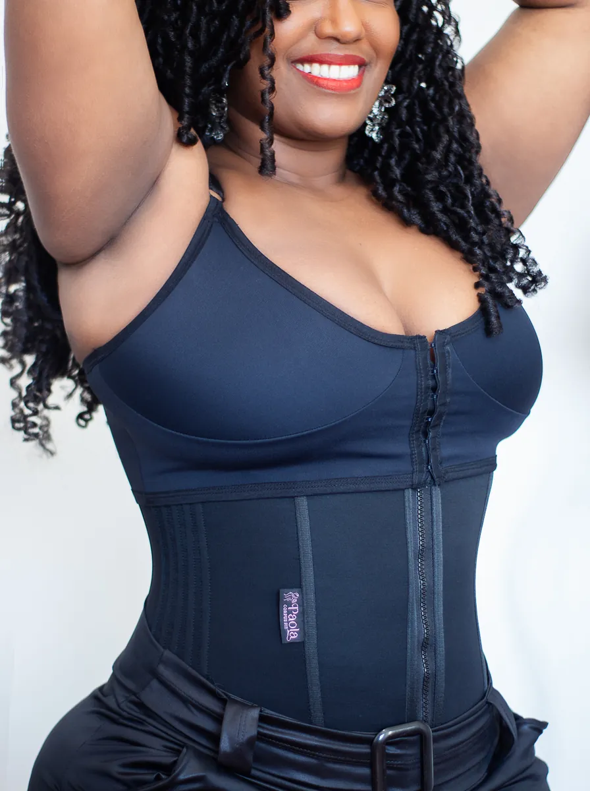

deAdeus, pochete!
A cinta de 30 barbatanas que não dobra, não enrola e não machuca. Com 2 sutiãs, gel e creme no mesmo kit.
Você só paga depois de falar com a Paola no WhatsApp. Ela confirma seu tamanho antes de enviar.
Mesma roupa. Com e sem a cinta.
Arraste a linha e veja a cintura e a barriga.
- Barriga mais lisa na hora
- Cintura marcada
- Disfarça as gordurinhas por baixo da roupa


Sem cinta Com cintaImagem ilustrativa. O resultado varia de corpo para corpo.
Cinta que dobra não serve
Quem já comprou cinta conhece: dobra na barriga, enrola nas costas e machuca. A da Paola foi feita para resolver exatamente isso.
Cintas baratas da internet
- Dobra e enrola quando você senta
- Poucas barbatanas, perde a forma
- Machuca e incomoda
- Você escolhe o tamanho sozinha e torce para servir
Cinta da Paola
- Não dobra nem enrola, nem sentada
- 30 barbatanas na frente e nas laterais
- Tecido cetinete pós-cirúrgico e antialérgico
- A Paola confirma seu tamanho antes de enviar
Monte seu pedido

O que as clientes dizem
Espaço para avaliações reais com foto, tamanho e número da calça. Os depoimentos abaixo são exemplos.

1 2 3O segredo está nas barbatanas
- 1Zíper na frenteVeste e tira rápido, e comprime ainda mais
- 22 regulagens de colchetePor dentro, para ajustar conforme o corpo acostuma
- 3Barbatanas na frente e nas lateraisSeguram a cinta no lugar: não dobra nem enrola
- 4Tecido cetinete, 4 camadasPós-cirúrgico e antialérgico
Feita para corpos reais



Perguntas frequentes
Posso usar no pós-parto?
Pode. A cinta ajuda no pós-parto e no pós-procedimento, e o tecido é pós-cirúrgico e antialérgico. Se você fez cesárea ou cirurgia, comece quando o seu médico liberar.
E se eu errar o tamanho?
Por isso a Paola confere antes de enviar. Você escolhe pelo número da calça ou short (do P ao XGG, até o 52) e, no WhatsApp, ela confirma o tamanho com você por uma foto de frente.
Dobra quando eu sento ou pego o bebê?
Não. As barbatanas mantêm a cinta no lugar quando você senta, se abaixa ou se mexe. E ela não marca por baixo da roupa.
Qual kit eu escolho?
O Kit Completo é o mais escolhido: cinta, 2 sutiãs, gel e creme, e cada produto sai por menos de R$ 96. Se quiser gastar menos, o Combo Duplo (cinta + gel ou sutiã) custa só R$ 30 a mais que a cinta sozinha.
Qual a diferença entre a cinta de 30 e a de 20?
Só a quantidade de barbatanas. O tecido, o zíper e as regulagens são iguais. Quanto mais barbatanas, mais firme: por isso a de 30 é a melhor.
Preciso pagar no site?
Não. Você envia o pedido pelo WhatsApp e só paga depois de falar com a Paola: no Pix (com 5% de desconto) ou no cartão em até 6x sem juros. Ela envia do Rio de Janeiro para todo o Brasil.